Empirical Risk Minimization (ERM) is the foundational principle in machine learning that guides a model to learn by finding the parameters that minimize the average error (loss) on a training dataset. It serves as a practical, calculable substitute for finding the true, unattainable minimum error across all possible real-world data.
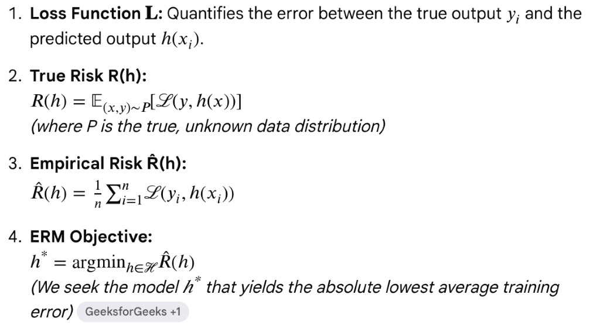
The chi-square test and t-test are both statistical tests used in hypothesis testing, but they are used in different situations and for different types of data.
Chi-Square Test:
- Purpose: The chi-square test is used to determine whether there is a significant association between categorical variables.
- Types:
- Chi-square test of independence: Tests whether there is a significant association between two categorical variables.
- Chi-square test of goodness of fit: Tests whether observed categorical data fit a theoretical distribution.
- Data Type: It is used with categorical data, where data points fall into specific categories or groups.
- Assumptions:
- The variables are categorical.
- The observations are independent.
- The expected frequency count in each cell of the contingency table is at least 5.
- Output: The chi-square test produces a test statistic and a p-value that indicates whether the observed association between variables is statistically significant.
T-Test:
- Purpose: The t-test is used to determine whether there is a significant difference between the means of two groups.
- Types:
- Independent t-test: Compares the means of two independent groups.
- Paired t-test: Compares the means of two related groups (e.g., before and after measurements).
- Data Type: It is used with interval or ratio data, where the data points are numerical and continuous.
- Assumptions (for independent t-test):
- The data are approximately normally distributed within each group.
- The variances of the populations are approximately equal.
- The observations are independent.
- Output: The t-test produces a test statistic (t-value) and a p-value that indicates whether the difference in means between groups is statistically significant.
Key Differences:
- Data Type: Chi-square tests categorical data, while t-tests are used with numerical (continuous) data.
- Purpose: Chi-square tests for association between categorical variables, while t-tests compare means of numerical variables.
- Assumptions: Chi-square test assumes categorical data and independence of observations; t-test assumes normally distributed data and independence of observations (for independent t-test).
In summary, choose between a chi-square test and a t-test based on the type of data you have (categorical vs. numerical) and the specific hypothesis you want to test (association between variables vs. difference in means). Each test has its own assumptions and applications, ensuring you choose the most appropriate one for your analysis.
Hypothesis testing is a fundamental statistical method used to make inferences about a population based on sample data. It involves evaluating two competing hypotheses about the population parameter of interest: the null hypothesis (H₀) and the alternative hypothesis (H₁ or Hₐ).
Steps in Hypothesis Testing:
- Formulate Hypotheses:
- Null Hypothesis (H₀): This is the default assumption or the status quo. It represents no effect, no difference, or no relationship in the population. It is what you aim to test against.
- Alternative Hypothesis (H₁ or Hₐ): This is the opposite of the null hypothesis. It represents what you suspect to be true or hope to demonstrate. It suggests an effect, difference, or relationship exists in the population.
Example: - H₀: There is no difference in mean scores between Group A and Group B.
- H₁: There is a difference in mean scores between Group A and Group B.
- Choose a Significance Level (α):
- The significance level (α) is the probability threshold below which you reject the null hypothesis. Commonly used values are 0.05 (5%) and 0.01 (1%).
- It represents the probability of rejecting the null hypothesis when it is actually true (Type I error).
- Select a Statistical Test:
- The choice of statistical test depends on the nature of your data (categorical or numerical) and the specific hypotheses being tested.
- Examples include t-tests, chi-square tests, ANOVA, correlation tests, etc.
- Collect and Analyze Data:
- Collect a sample from the population of interest.
- Calculate the appropriate test statistic (e.g., t-value, chi-square statistic) using sample data.
- Compare Results to the Null Hypothesis:
- Determine the p-value: The p-value is the probability of obtaining results as extreme as the observed data, assuming the null hypothesis is true.
- If the p-value is less than or equal to α (typically 0.05), reject the null hypothesis in favor of the alternative hypothesis.
- If the p-value is greater than α, fail to reject the null hypothesis (note: this does not mean "accept" the null hypothesis).
- Draw Conclusions:
- Based on the results, draw conclusions about the population parameter.
- If you reject the null hypothesis, you may conclude that there is sufficient evidence to support the alternative hypothesis.
- If you fail to reject the null hypothesis, you may conclude that there is not enough evidence to support the alternative hypothesis.
Key Concepts in Hypothesis Testing:
- Type I Error: Rejecting the null hypothesis when it is actually true (false positive).
- Type II Error: Failing to reject the null hypothesis when it is actually false (false negative).
- Power: Probability of correctly rejecting the null hypothesis when it is false.
Example:
Suppose you want to test if a new drug treatment is more effective than a placebo. Your hypotheses would be:
- H₀: The mean effectiveness score for the drug treatment is the same as for the placebo.
- H₁: The mean effectiveness score for the drug treatment is higher than for the placebo.
You would collect data, perform a statistical test (e.g., independent t-test), obtain a p-value, compare it to your chosen significance level (e.g., α = 0.05), and then draw conclusions based on whether you reject or fail to reject the null hypothesis.
Hypothesis testing is crucial in scientific research, allowing researchers to make informed decisions and draw reliable conclusions based on data analysis.
Calculating the p-value is a critical step in hypothesis testing, as it helps determine the strength of evidence against the null hypothesis. The exact method to compute the p-value depends on the type of statistical test you are conducting. Here’s a general outline of how p-values are computed for common statistical tests:
1. Z-Test (for a single mean):
- Formula:
Z=xˉ−μσn\text{Z} = \frac{\bar{x} - \mu}{\frac{\sigma}{\sqrt{n}}}Z=nσxˉ−μ
where:
- xˉ\bar{x}xˉ is the sample mean,
- μ\muμ is the population mean (under the null hypothesis),
- σ\sigmaσ is the population standard deviation (known),
- nnn is the sample size.
- For a two-tailed test: p-value=2×P(Z>∣Z∣)\text{p-value} = 2 \times P(Z > |\text{Z}|)p-value=2×P(Z>∣Z∣)
- For a one-tailed test (directional hypothesis): p-value=P(Z>Z)\text{p-value} = P(Z > \text{Z})p-value=P(Z>Z) or p-value=P(Z<Z)\text{p-value} = P(Z < \text{Z})p-value=P(Z<Z), depending on the direction of the alternative hypothesis.
2. T-Test:
- Formula for t-statistic: t=xˉ1−xˉ2s12n1+s22n2\text{t} = \frac{\bar{x}_1 - \bar{x}_2}{\sqrt{\frac{s_1^2}{n_1} + \frac{s_2^2}{n_2}}}t=n1s12+n2s22xˉ1−xˉ2 where:
- xˉ1,xˉ2\bar{x}_1, \bar{x}_2xˉ1,xˉ2 are the sample means,
- s1,s2s_1, s_2s1,s2 are the sample standard deviations,
- n1,n2n_1, n_2n1,n2 are the sample sizes.
- Degrees of freedom (dfdfdf) is calculated based on the sample sizes n1n_1n1 and n2n_2n2.
- Use statistical tables, software, or online calculators to find the p-value associated with the calculated t-statistic and degrees of freedom.
3. Chi-Square Test:
- Chi-Square Statistic:
χ2=∑(O−E)2E\chi^2 = \sum \frac{(O - E)^2}{E}χ2=∑E(O−E)2
where:
- OOO is the observed frequency,
- EEE is the expected frequency under the null hypothesis.
- Degrees of freedom (dfdfdf) is determined by the number of categories minus 1.
- Use statistical tables, software, or online calculators to find the p-value associated with the calculated χ2\chi^2χ2 statistic and degrees of freedom.
4. ANOVA:
- F-Statistic:
F=Between-group variabilityWithin-group variabilityF = \frac{\text{Between-group variability}}{\text{Within-group variability}}F=Within-group variabilityBetween-group variability - P-Value Calculation:
- Degrees of freedom for between-group and within-group variability are calculated based on the number of groups and the total sample size.
- Use statistical tables, software, or online calculators to find the p-value associated with the calculated F-statistic and degrees of freedom.
General Steps for Finding P-Value:
- Calculate the Test Statistic: Compute the appropriate test statistic based on your data and the hypothesis being tested.
- Determine the Distribution: Identify the distribution (Z, t, χ2\chi^2χ2, F, etc.) that corresponds to your test statistic.
- Find the P-Value: Use statistical tables, software, or online calculators to find the p-value associated with your calculated test statistic and degrees of freedom (if applicable).
- Interpret the P-Value: Compare the obtained p-value with the significance level (α\alphaα) chosen for the test. If the p-value is less than or equal to α\alphaα, reject the null hypothesis. If the p-value is greater than α\alphaα, fail to reject the null hypothesis.
- Report: State your conclusion based on the p-value and interpret the findings in the context of your study.
When performing hypothesis testing, accurate computation and interpretation of the p-value are crucial for making informed decisions and drawing valid conclusions from your data.
R-squared (R²) and adjusted R-squared (R²_adjusted) are both metrics used to evaluate the goodness of fit of a regression model, but they serve different purposes and account for different aspects of model performance.
R-squared (R²):
- Definition: R-squared is a statistical measure that represents the proportion of the variance in the dependent variable that is explained by the independent variables in the model.
- Range: R-squared values range from 0 to 1.
- Interpretation:
- A higher R-squared value indicates that a larger proportion of the variance in the dependent variable is explained by the independent variables.
- R-squared does not indicate whether the model itself is adequate; it only shows how well the model fits the data.
- Formula:
R2=1−SSresidualSStotalR^2 = 1 - \frac{SS_{\text{residual}}}{SS_{\text{total}}}R2=1−SStotalSSresidual
- SSresidualSS_{\text{residual}}SSresidual is the sum of squared residuals (errors) of the regression model.
- SStotalSS_{\text{total}}SStotal is the total sum of squares of the dependent variable.
- R-squared increases with the addition of more independent variables, even if those variables are not significant. Therefore, it does not penalize for overfitting.
Adjusted R-squared (R²_adjusted):
- Definition: Adjusted R-squared is a modified version of R-squared that adjusts for the number of predictors in the model.
- Purpose: It penalizes for adding independent variables that do not improve the model significantly.
- Range: Adjusted R-squared values can be negative and typically range from −∞-\infty−∞ to 1.
- Formula:
Radjusted2=1−(1−R2)⋅(n−1)n−k−1R^2_{\text{adjusted}} = 1 - \frac{(1 - R^2) \cdot (n - 1)}{n - k - 1}Radjusted2=1−n−k−1(1−R2)⋅(n−1)
- nnn is the number of observations.
- kkk is the number of independent variables (predictors) in the model.
- Adjusted R-squared increases only if the new term improves the model more than would be expected by chance.
- It generally provides a more realistic assessment of the model’s fit, especially when dealing with multiple predictors.
- Use: Adjusted R-squared is particularly useful when comparing regression models with different numbers of predictors or when trying to determine whether adding more variables to the model improves its explanatory power significantly.
Key Differences:
- Penalization: R-squared does not penalize for adding unnecessary variables, whereas adjusted R-squared penalizes for adding variables that do not improve the model.
- Interpretation: Adjusted R-squared tends to be lower than R-squared when predictors are added to the model that do not improve the fit.
- Purpose: R-squared is primarily used to assess how well the model fits the data, whereas adjusted R-squared is used to assess how well the model fits the data while considering the number of predictors.
In summary, while R-squared provides a measure of how well the regression model explains the variation in the dependent variable, adjusted R-squared offers a more conservative estimate by considering the model’s complexity due to the number of predictors. Adjusted R-squared is often preferred for evaluating the quality and relevance of regression models, especially when comparing models with different numbers of predictors.
Positional embeddings
- Transformers do not know the order of words
- word embedding is added with positional embedding to add information of position
- Position embeddings remain same irrespective of sequence length and input
- The values should not be very large otherwise they shift the embeddings too far from their space.
- alternated by sine and cosine in increasing frequencies for each value in position vector
Ensemble learning techniques - combines multiple weak learners.
Bagging
- Method:
- Each model in the ensemble is trained independently using a random subset of the data with replacement (bootstrapping).
- The final prediction is typically made by averaging the predictions (for regression) or majority voting (for classification).
- Objective:
- Reduce variance and prevent overfitting by averaging multiple models.
- Examples:
- Random Forest: An ensemble of decision trees where each tree is trained on a different bootstrap sample of the data.
- Training Process:
- Generate multiple bootstrap samples from the training dataset.
- Train a separate model on each bootstrap sample.
- Combine the predictions from all models.
- Strengths:
- Works well with high variance models like decision trees.
- Simple and parallelizable since each model is trained independently.
- Weaknesses:
- Does not focus on difficult-to-predict instances.
- Might not significantly improve performance if base learners are strong and not very sensitive to data variations.
Boosting
- Method:
- Models are trained sequentially, each new model focusing on correcting the errors made by the previous models.
- Weights are assigned to each instance, with more weight given to misclassified instances.
- Objective:
- Reduce bias and variance by focusing on difficult instances and combining weak learners into a strong learner.
- Examples:
- AdaBoost: Adjusts the weights of incorrectly classified instances and combines the weak learners' predictions through a weighted majority vote.
- Gradient Boosting: Sequentially adds models that minimize a loss function using gradient descent, often using decision trees as base learners.
- Training Process:
- Initialize model weights and train the first model.
- Adjust weights based on the performance of the previous model.
- Train the next model on the weighted data.
- Repeat until the desired number of models is trained.
- Combine the predictions of all models, often using weighted voting.
- Strengths:
- Effective at reducing both bias and variance.
- Can achieve high accuracy by focusing on difficult instances.
- Weaknesses:
- More prone to overfitting, especially with noisy data.
- Training is sequential and less parallelizable compared to bagging.
- More computationally intensive due to the iterative training process.
Feature | Bagging | Boosting |
Method | Bootstrap sampling, independent model training | Sequential model training, weighted adjustments |
Objective | Reduce variance, prevent overfitting | Reduce bias and variance, focus on hard cases |
Training | Parallelizable, multiple bootstrap samples | Sequential, models focus on previous errors |
Combination | Averaging (regression) or voting (classification) | Weighted voting or summation |
Examples | Random Forest | AdaBoost, Gradient Boosting |
Strengths | Simple, reduces overfitting, works well with high variance models | High accuracy, reduces bias and variance |
Weaknesses | Might not improve strong learners significantly | Prone to overfitting, computationally intensive |
XGBoost (Extreme Gradient Boosting) and Random Forest are both popular ensemble learning algorithms, but they have distinct characteristics and are suited to different types of problems. Here's a comparison:
Random Forest:
- Algorithm:
- Consists of multiple decision trees, typically trained with the bagging method.
- Each tree is built independently, and the final prediction is made by averaging (regression) or voting (classification).
- Strengths:
- Robust to Overfitting: The averaging of multiple trees helps to reduce overfitting.
- Handles Missing Values: Can handle missing data well through surrogate splits.
- Easy to Use: Requires less parameter tuning and is generally easier to implement.
- Weaknesses:
- Slower Predictions: With many trees, the prediction time can be slower compared to a single model.
- Less Interpretability: Although it can provide feature importance, the overall model is less interpretable.
- Use Cases:
- Works well for a variety of problems, especially when you need a quick and robust model without extensive parameter tuning.
- Effective for both classification and regression tasks.
- XGBoost:
- Algorithm:
- An implementation of gradient boosting that builds trees sequentially.
- Each new tree corrects errors made by the previous trees.
- Strengths:
- Performance: Often achieves higher accuracy compared to Random Forest, especially on structured/tabular data.
- Speed and Efficiency: Optimized for speed and performance with parallelization and hardware optimization.
- Feature Importance: Provides detailed insights into feature importance.
- Regularization: Includes L1 (Lasso) and L2 (Ridge) regularization to prevent overfitting.
- Weaknesses:
- Complexity: Requires more careful parameter tuning to achieve optimal performance.
- Overfitting: Can overfit if not properly regularized, especially on small datasets.
- Use Cases:
- Particularly effective for structured data where high performance is needed.
- Preferred in many competitive machine learning challenges due to its accuracy and efficiency.
- Summary:
- Random Forest is a solid choice for quickly building a reliable model with minimal parameter tuning. It is robust and works well out-of-the-box.
- XGBoost requires more effort in tuning but can achieve superior performance, particularly on large and complex datasets.
- Choosing between them often depends on the specific requirements of your project, such as the need for speed, accuracy, interpretability, and ease of use.
Boosting types
- Gradient boosting
- AdaBoost
- XGBoost
In XGBoost, the "X" stands for "eXtreme." The name reflects the algorithm's focus on providing extreme (high) performance and efficiency in machine learning tasks, particularly through its optimized implementation of gradient boosting.
AdaBoost | Gradient Boosting |
During each iteration in AdaBoost, the weights of incorrectly classified samples are increased, so that the next weak learner focuses more on these samples. | Gradient Boosting updates the weights by computing the negative gradient of the loss function with respect to the predicted output. |
AdaBoost uses simple decision trees with one split known as the decision stumps of weak learners. | Gradient Boosting can use a wide range of base learners, such as decision trees, and linear models. |
AdaBoost is more susceptible to noise and outliers in the data, as it assigns high weights to misclassified samples | Gradient Boosting is generally more robust, as it updates the weights based on the gradients, which are less sensitive to outliers. |
Kullback-Leibler (KL) divergence
- Measure of the difference between two probability distributions, can be used to overlap the two distributions (initial LM output vs. tuned LM output).
- KL divergence is a measure of how one probability distribution diverges from a second, expected probability distribution. It quantifies the difference between two probability distributions.
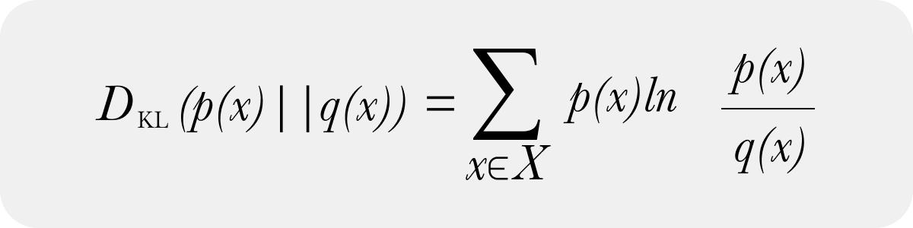
LLAMA Chatbot

During the pre-training of the LLaMA (Large Language Model Meta AI) models, the loss function used is typically the cross-entropy loss. This loss function is standard for training language models and measures the difference between the predicted probability distribution over the vocabulary and the actual distribution, which is a one-hot encoded vector representing the correct next token.
Here's a bit more detail on how it works:
- Cross-Entropy Loss:
- Objective: The goal is to minimize the difference between the predicted probability distribution of the next word (or token) and the actual word (or token).
- Formula: For a single token prediction, the cross-entropy loss can be expressed as:Loss=−∑i=1Nyilog(y^i)Loss=−i=1∑Nyilog(y^i) where yiyi is the actual distribution (one-hot encoded, where the correct token is 1 and all others are 0), and y^iy^i is the predicted probability distribution over the vocabulary.
- Training Process:
- The model is trained to predict the next token in a sequence given the previous tokens. This is done over large amounts of text data.
- For each token in the training dataset, the model outputs a probability distribution over the vocabulary, and the cross-entropy loss is calculated using this distribution and the actual next token.
- The gradients of this loss with respect to the model parameters are computed, and the model parameters are updated using optimization techniques like Stochastic Gradient Descent (SGD) or its variants (e.g., Adam).
- This pre-training step enables the model to learn the statistical properties of the language, which can then be fine-tuned for specific tasks such as text classification, translation, summarization, or question answering.
What is Model Drift?
Definition: Model drift refers to changes in a model’s predictions over time. This can be due to changes in the model’s inputs, outputs, or the actuals (ground truths).
Importance: Monitoring for model drift is crucial because it helps maintain the accuracy and relevance of a machine learning model in a changing environment.
Types of Model Drift
Prediction Drift
Definition: Changes in the model’s predictions over time.
Resolution: Retrain the model with additional or updated data, or replace the model if necessary.
Concept Drift
Definition: Shift in the statistical properties of the target variable.
Resolution: Adjust the model to account for new patterns, reweight data, or refit the model.
Data Drift
Definition: Change in the statistical properties of input data.
Resolution: Update the model to reflect new data distributions, and continually monitor inputs.
Upstream Drift
Definition: Changes in the data pipeline feeding the model.
Resolution: Monitor and address data quality issues, such as missing values or feature cardinality changes.
Weight Initilization
- Xavier - sigmoid
- He - relu
Optimizer | Description | Learning Rate | Memory Requirement | Convergence Speed | Key Features | Pros | Cons |
Gradient Descent (GD) | Basic optimization algorithm that updates parameters using the gradient of the loss function. | Fixed | Low | Slow | Iterates over the entire dataset. | Simple to implement. | Slow for large datasets. |
Stochastic Gradient Descent (SGD) | Updates parameters using the gradient of the loss function for a single sample. | Fixed | Low | Fast | Uses one sample at a time. | Fast, good for online learning. | High variance in updates, may not converge smoothly. |
Mini-batch Gradient Descent | Updates parameters using the gradient of the loss function for a small batch of samples. | Fixed | Low | Moderate | Uses batches of samples. | Reduces variance, improves convergence. | Requires tuning of batch size. |
Momentum | Accelerates SGD by adding a fraction of the previous update to the current update. | Fixed | Moderate | Fast | Adds a momentum term to the update rule. | Speeds up convergence, reduces oscillations. | Requires tuning of momentum parameter. |
Nesterov Accelerated Gradient (NAG) | Improves momentum by looking ahead before updating parameters. | Fixed | Moderate | Fast | Applies a correction term. | Further reduces oscillations, faster convergence. | Requires careful tuning. |
Adagrad | Adapts the learning rate for each parameter individually based on past gradients. | Decreasing | High | Moderate | Accumulates squared gradients. | Automatically adjusts learning rate, good for sparse data. | Learning rate can become very small. |
Adadelta | Improves Adagrad by limiting the accumulation of past gradients. | Adaptive | Moderate | Moderate | Uses a moving window of squared gradients. | Overcomes Adagrad’s diminishing learning rate problem. | More complex to implement. |
RMSprop | Adapts the learning rate for each parameter using a moving average of squared gradients. | Adaptive | Moderate | Fast | Uses a moving average of squared gradients. | Works well in practice, good for non-stationary data. | Requires tuning of decay parameter. |
Adam | Combines RMSprop and momentum by keeping an exponentially decaying average of past gradients and squared gradients. | Adaptive | High | Fast | Uses moving averages of gradient and squared gradient. | Adaptive learning rate, works well in practice, good default choice. | Requires tuning of multiple parameters. |
Nadam | Combines Adam with Nesterov Accelerated Gradient. | Adaptive | High | Fast | Incorporates NAG into Adam. | Benefits of Adam and NAG, faster convergence. | Requires tuning of multiple parameters. |
AdaMax | A variant of Adam using the infinity norm. | Adaptive | High | Fast | Uses the infinity norm for gradients. | More stable than Adam in some cases. | Still requires tuning of parameters. |
SGD with Warm Restarts | Periodically restarts SGD with a large learning rate, gradually decreasing it. | Cyclical | Low | Fast | Periodically resets learning rate. | Can escape local minima, improve generalization. | Requires tuning of restart schedule. |
Lookahead | Improves any optimizer by "looking ahead" at future parameter updates. | Adaptive | High | Fast | Maintains fast weights and slow weights. | Enhances performance of base optimizer. | Adds complexity, still requires tuning. |
Summary
- Basic Optimizers: Gradient Descent, SGD, and Mini-batch Gradient Descent are straightforward but may require extensive tuning and can be slow to converge.
- Momentum-based Optimizers: Momentum, NAG, and Lookahead improve convergence speed and stability by incorporating previous updates.
- Adaptive Learning Rate Optimizers: Adagrad, Adadelta, RMSprop, Adam, Nadam, and AdaMax adjust learning rates based on past gradients, offering faster convergence and better performance on non-stationary data.
- Special Techniques: SGD with Warm Restarts can help escape local minima and improve generalization.
Knowledge Distillation

Hyper Parameter Optimization
Manual Search, Random Search, Grid Search, and Bayesian Optimization
Bayesian Optimization
The probabilistic model is updated after each evaluation, and the next hyperparameters to evaluate are chosen based on a trade-off between exploitation (exploiting areas where the model is likely to perform well based on the surrogate model) and exploration (exploring areas where the surrogate model is uncertain or has high variance).
Bayesian Optimization differs from Random Search and Grid Search in that it improves the search speed using past performances, whereas the other two methods are uniform (or independent) of past evaluations. In that sense, Bayesian Optimization is like Manual Search. Let’s say you are manually optimizing the hyperparameter of a Random Forest regression model. Firstly, you would try a set of parameters, then look at the result, change one of the parameters, rerun, and compare the results, so that way you know whether you are going towards the right direction. Bayesian Optimization does a similar thing — the performance of your past hyperparameter affects the future decision. In comparison, Random Search and Grid Search do not take into account past performance when determining new hyperparameters to evaluate. Thus, Bayesian Optimization is a much more efficient method.
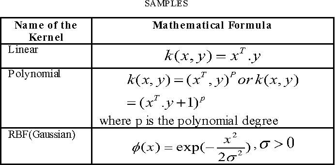

- In SVM, a hyperplane is a decision boundary that separates different classes in the feature space. For a two-dimensional space, the hyperplane is a line; for higher dimensions, it is a flat affine subspace.
- Support vectors are the data points that are closest to the hyperplane and are most difficult to classify. These points determine the position and orientation of the hyperplane.
- The margin is the distance between the hyperplane and the nearest support vectors. SVM aims to maximize this margin to improve the classifier's robustness and generalization.
- The kernel trick allows SVM to operate in a high-dimensional space without explicitly computing the coordinates of the data in that space. Kernels transform the input data into a higher-dimensional space to make it easier to find a separating hyperplane. Common kernels include:
- Linear Kernel: Suitable for linearly separable data.
- Polynomial Kernel: Suitable for non-linear data.
- Radial Basis Function (RBF) Kernel: Popular for non-linear data and handles data well in high dimensions.
- Sigmoid Kernel: Can be used as a proxy for neural networks.
- C Parameter (Regularization):
- The C parameter controls the trade-off between achieving a low training error and a low testing error, which is crucial for generalization. A smaller C allows more misclassifications, leading to a wider margin, while a larger C aims for fewer misclassifications but a narrower margin.
- Support Vector Regression (SVR):
- SVR is the regression counterpart of SVM. It uses the same principles but aims to fit the data within a certain margin of tolerance.
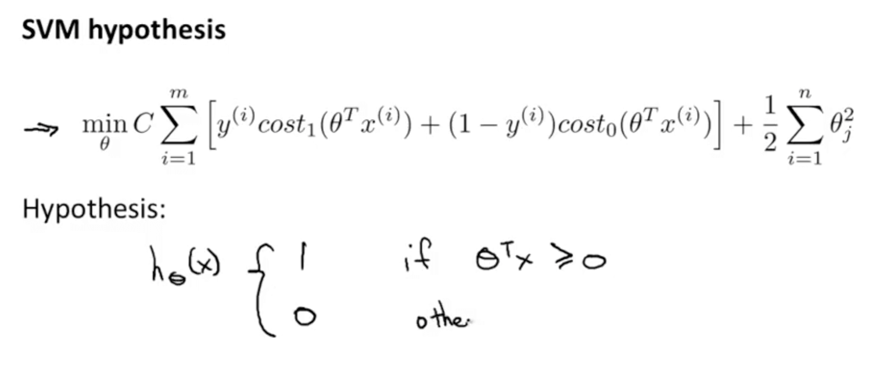
SVM Loss
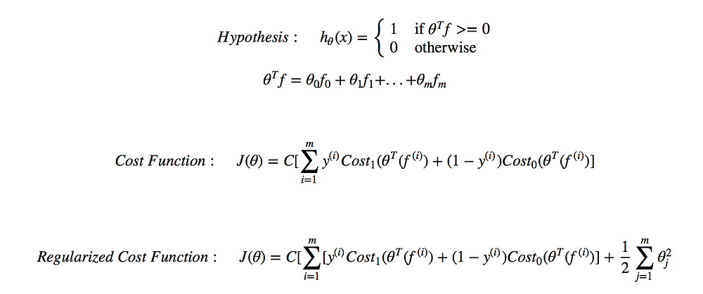
Nonparametric models are those that do not assume a fixed form for the underlying data distribution and can adapt to the complexity of the data. Unlike parametric models, which have a fixed number of parameters, nonparametric models have a number of parameters that grows with the amount of training data. Here are some examples of nonparametric models:
- k-Nearest Neighbors (k-NN): This model makes predictions based on the k closest training examples in the feature space. It does not assume any specific functional form for the mapping from input to output.
- Decision Trees: These models recursively split the data into subsets based on feature values, creating a tree-like structure. The number of splits (and thus the complexity of the model) can grow with the size of the training data.
- Kernel Density Estimation (KDE): This method estimates the probability density function of a random variable by averaging over a kernel function centered at each data point. The complexity of the model depends on the number of data points.
- Gaussian Processes (GP): These models define a distribution over functions and make predictions based on the observed data. The complexity of the model increases with the number of data points.
- Random Forests: An ensemble of decision trees where each tree is trained on a random subset of the data. The number of trees and their depth can vary, making the model nonparametric.
- Support Vector Machines with Non-linear Kernels: While SVMs with linear kernels are considered parametric, using non-linear kernels (like the Radial Basis Function) can make them more flexible and capable of capturing more complex patterns in the data, behaving in a nonparametric manner in terms of their capacity to fit the data.
Examples of Convex Problems in ML
- Linear Regression:
- Logistic Regression:
- Support Vector Machines (SVM):
- Ridge and Lasso Regression:
Non-Convex Problems in ML
- Neural Networks
- Clustering (e.g., k-means)
RandomForest vs Bagging
Both RF and Bagging use - Bootstrap Sampling:
- For each tree in the forest, a random sample of the training data is selected with replacement. This means that some data points can be selected multiple times, while others may not be selected at all.
- Typically, this sample is of the same size as the original training set, but because it's sampled with replacement, some instances will be repeated, and some will be omitted.
Feature Selection:
- When constructing each tree, at each split, Random Forest randomly selects a subset of features and only considers those features for splitting the node.
- In Bagging, all features are considered for each split in the base model.
Model Correlation:
- Random Forest reduces the correlation between individual models more effectively than Bagging due to the additional randomness in feature selection.
μ is the mean; σ is standard deviation; σ^2 is the variance.
Gaussian vs Normal
Yes, the terms "Gaussian distribution" and "normal distribution" refer to the same concept in statistics and probability theory. They are two different names for the same probability distribution.
Gaussian Distribution
- Definition: Gaussian distribution is a continuous probability distribution that describes data that clusters around a mean or average.
- Probability Density Function (PDF): The PDF of a Gaussian distribution is given by:

Normal Distribution
- Definition: The normal distribution is a continuous probability distribution that is symmetric around the mean, showing that data near the mean are more frequent in occurrence than data far from the mean.
- Standard Normal Distribution: A special case of the normal distribution where the mean μ is 0 and the standard deviation σ is 1. Its PDF is:
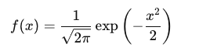
Key Characteristics of Gaussian/Normal Distribution
- Symmetry: The distribution is symmetric around the mean.
- Bell-shaped Curve: The shape of the PDF is a bell curve.
- Mean, Median, and Mode: All are equal and located at the center of the distribution.
- 68-95-99.7 Rule: Approximately 68% of the data falls within one standard deviation of the mean, 95% within two standard deviations, and 99.7% within three standard deviations.
- Central Limit Theorem: States that the sum of a large number of independent and identically distributed (IIDs) random variables tends to follow a normal distribution, regardless of the original distribution of the variables.
Probability vs Likelihood
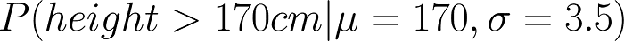
- While calculating probability, feature value can be varied, but the characteristics(mean & Standard Deviation) of the data distribution cannot be altered.
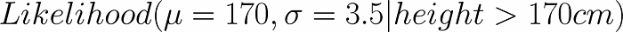
- Here, the dataset features will be varied, i.e. Mean & Standard Deviation of the dataset will be varied in order to get the maximum likelihood for height > 170 cm.
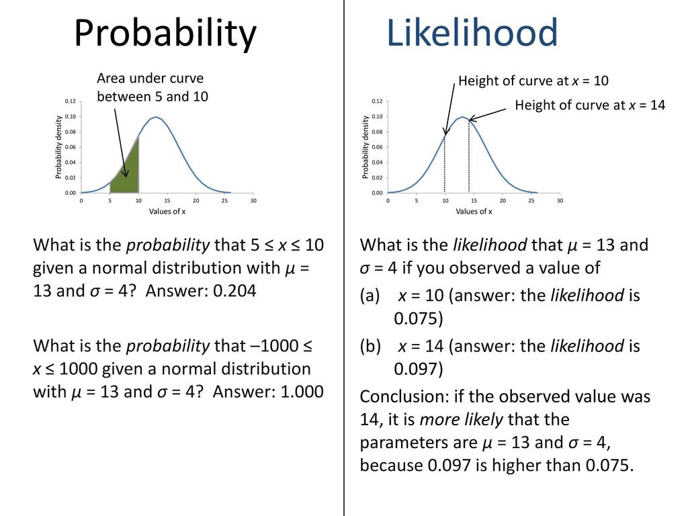
Word2Vec loss function
- Skip-gram with Negative Sampling (SGNS): This is the most common variant. The loss function in this case is based on negative sampling, where the objective is to distinguish the target word from a set of noise words (negative samples) for each context word. The negative sampling loss is formulated to maximize the probability of the observed word-context pairs and minimize the probability of randomly sampled noise words.
The loss function LLL for a single (context, target) pair is defined as: - CBOW with Negative Sampling: In the Continuous Bag-of-Words model, the context words are used to predict the target word. The loss function is similar to the Skip-gram model but inverted in terms of the context and target word roles.
- Hierarchical Softmax: This is an alternative to negative sampling, where a binary tree representation of the vocabulary is used. Each word is represented as a path from the root to a leaf in the tree, and the objective is to maximize the probability of the correct path. This reduces the computational complexity compared to a full softmax over the vocabulary.
QKV
QKV - derived from the input embeddings through a learned linear transformation
- The query matrix represents the set of queries for the current token or position in the input sequence.
- Each query vector is used to compute attention scores by measuring its similarity with key vectors from other positions.
- The key matrix represents the set of keys for all tokens in the input sequence.
- Each key vector helps in determining how much attention a particular token should receive based on its similarity to the query vectors.
- The value matrix contains the actual values or information that are to be aggregated or attended to.
- The attention mechanism uses the computed attention scores to weigh these value vectors, producing a weighted sum that represents the attended output for each position.
In Transformers, the query, key, and value matrices are used in the context of attention mechanisms, particularly in models like the Transformer architecture. Here's the purpose of each:
- Query Matrix (Q):
- The query matrix is derived from the input embeddings of the model and represents what is being searched for in the input sequence.
- Each query vector corresponds to a word or token in the input sequence.
- During the attention computation, the query matrix is used to compute similarity scores (dot products) with the key matrix to determine how much focus to place on each token in the input sequence.
- Key Matrix (K):
- The key matrix is also derived from the input embeddings and represents the tokens against which the similarity of the query vectors is computed.
- Like the query matrix, each key vector corresponds to a word or token in the input sequence.
- The key vectors are used to compute the dot product with query vectors to determine the attention weights.
- Value Matrix (V):
- The value matrix is derived from the input embeddings and represents the values or information that the model should focus on.
- Each value vector corresponds to a word or token in the input sequence.
- During the attention computation, the value vectors are weighted by the attention scores (computed from query and key) to produce the output of the attention mechanism.
- In summary, these matrices (Q, K, and V) are crucial components of the self-attention mechanism in Transformers. They allow the model to compute attention scores between different tokens in the input sequence, thereby enabling the model to focus on relevant information and capture dependencies between tokens effectively.
Self Attention vs Cross Attention
Self attention - Q is looking within the input embeddings
Cross attention - Q is taking from output embeddings


![1) This is our
2) We embed
3) Split into 8 heads.
4) Calculate attention
5) Concatenate the resulting Z matrices,
input sentence*
each word*
We multiply X or
using the resulting
then multiply with weight matrix Wº to
R with weight matrices
Q/K/V matrices
produce the output of the layer
X
WoQ
Thinking
WOK
Qo
Machines
WoV
Ko
Zo
Vo
WO
W1Q
* In all encoders other than #0,
W1K
W1V
Q1
we don't need embedding.
K1
Z
Z
We start directly with the output
V1
of the encoder right below this one
R
...
.. .
...
WzQ
-WzK
W-V
Q7
LK7
Z7
V7](images/image48.png)

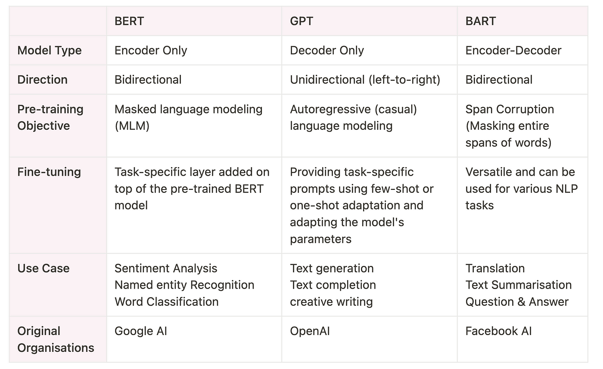
Maximum Likelihood Estimate
Probabilistic framework for solving the problem of density estimation -- finding mean and standard deviation of PDF


- It involves maximizing a likelihood function in order to find the probability distribution and parameters that best explain the observed data.
- It provides a framework for predictive modeling in machine learning where finding model parameters can be framed as an optimization problem.
- Used in K-Means


Bernoulli's trial is also said to be a binomial trial. In the case of the Bernoulli trial, there are only two possible outcomes. But, in the case of the binomial distribution, we get the number of successes in a sequence of independent experiments.
MAP vs MLE
- MAP and MLE are both methods used to estimate parameters in statistical models, but they differ in their approach to incorporating prior information and their interpretation.
- MLE is a frequentist approach that maximizes the likelihood of the data given the parameters, assuming no prior information.
- MAP is a Bayesian approach that incorporates prior beliefs about the parameters, balancing them with the likelihood of the observed data to estimate the parameters.
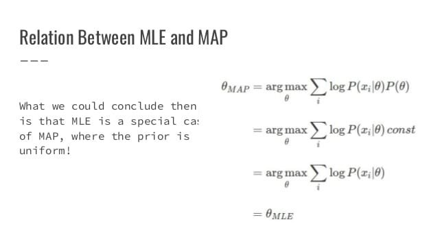
Expectation Maximization

- Given the number of guassinas, find their parameters (appropriate mean and variance). Initialise the parameters with random values.
- EM doesnt assign a class but instead computes a probability for a certain point to be of a certain class.
- K-means does almost same but does hard classificaiton (binary), but EM does soft clustering -- computes probability
- Uses probabilities to readjust mean and variance exactly like K-means
MLE vs EM
- MLE accumulates all of the data first and then uses that data to construct the most likely model. EM takes a guess at the parameters first—accounting for the missing data—then tweaks the model to fit the guesses and the observed data.
- MLE computes the density of fitting one distribution to the data; EM Fits various gaussians without knowing their classes
What is non-linearity give some examples.
Linearity means homogeneity of degree 1 and additiveness. This means, given a function 𝑓(𝑥), it should be both:
- homogeneous of degree 1, which means,𝑓(𝑎𝑥)=𝑎𝑓(𝑥)
- Additive, which means 𝑓(𝑥+𝑦)=𝑓(𝑥)+𝑓(𝑦)
And intuitively, any function that doesn’t abide by the above properties are considered as ‘non-linear’. In machine learning, commonly-used non-linear functions include feature maps like polynomial, anova and non-linear activations in Neural Networks like RELU and Sigmoid.
One might wonder why we need non-linearity. From the perspective of matrix analysis, linear transformations are essentially only projecting vectors to another base. This brings limited expressivity of linear functions. For example, for a multi-layer fully-connected Neural Network, given the optimal projection existed, adding layers could not help in improving the results (although it might help in faster convergence). (There is a strict proof about this, but I’m not going to include it here.) Another example is for regression problems, when the true map between x and y are non-linear, linear regression could not provide a satisfying result thus we will be needing feature maps/ kernel tricks.
Desirable properties of activation functions
Non Linearity (Non Constant)
- The purpose of the activation function is to introduce non-linearity into the network in turn allows you to model a response variable (aka target variable, class label, or score) that varies non-linearly with its explanatory variables
- Non-linear means that the output cannot be reproduced from a linear combination of the inputs
- Another way to think of it: without a non-linear activation function in the network, a NN, no matter how many layers it had, would behave just like a single-layer perceptron, because summing these layers would give you just another linear function (see definition just above).
Continuous (differentiable)
- This property is necessary for enabling gradient-based optimization methods.
- The binary step activation function is not differentiable at 0, and it differentiates to 0 for all other values, so gradient-based methods can make no progress with it
Range
- When the range of the activation function is finite, gradient-based training methods tend to be more stable, because pattern presentations significantly affect only limited weights.
- When the range is infinite, training is generally more efficient because pattern presentations significantly affect most of the weights. In the latter case, smaller learning rates are typically necessary.
Monotonic (non-decreasing or non-increasing)
- When the activation function is monotonic, the error surface associated with a single-layer model is guaranteed to be convex.
Approximates identity near the origin
- When activation functions have this property, the neural network will learn efficiently when its weights are initialized with small random values.
- When the activation function does not approximate identity near the origin, special care must be used when initializing the weights.
- Output of the activation function should be symmetrical at zero so that the gradients do not shift to a particular direction.
Why do we use activation functions
Allows non linearity, enabling to approximate a function.
Gradient Saturation

If you use sigmoid-like activation functions, like sigmoid and tanh, after some epochs of training, the linear part of each neuron will have values that are very big or very small. This means that the linear part will have a big output value regardless of its sign. Consequently, the input of sigmoid-like functions in each neuron which adds non-linearity will be far from the center of these functions.
In those locations, the gradient/derivative value is very small. Consequently, after numerous iterations, the weights get updated so slowly because the value of the gradient is very small. This is why we use the ReLU activation function for which its gradient doesn't have this problem.
The biggest advantage of ReLu is indeed non-saturation of its gradient, which greatly accelerates the convergence of stochastic gradient descent compared to the sigmoid / tanh functions.
Batch Gradient Descent vs Stochastic Gradient Descent
![Batch Gradient Descent
Computes gradient using the whole Training
sample
Slow and computationally expensive algorithm
Not suggested for huge training samples.
Deterministic in nature.
Gives optimal solution given sufficient time to
converge.
No random shuffling of points are required.
Can't escape shallow local minima easily.
Convergence is slow.
It updates the model parameters only after
processing the entire training set.
Stochastic Gradient
Computes gradient using a sing
Faster and less computationally
Can be used for large trair
Stochastic in nat
Gives good solution but I
The data sample should be in a random or
to shuffle the training set fc
SGD can escape shallow local n
Reaches the convergence
It updates the parameters after eacl](images/image27.png)

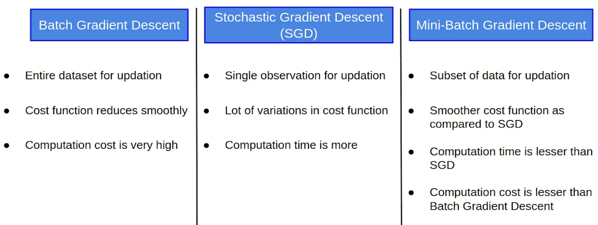
Gradient Descent Derivation
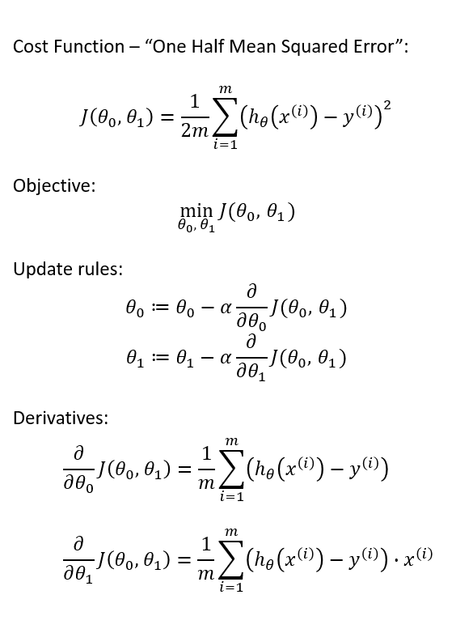
Bias Variance Tradeoff


The bias-variance trade-off is a fundamental concept in supervised machine learning that deals with the balance between model simplicity and model flexibility:
- Bias: Bias refers to the error introduced by approximating a real-world problem with a simplified model. A high bias model oversimplifies the underlying relationships in the data and may consistently underfit, leading to poor performance on both training and test data.
- Variance: Variance, on the other hand, refers to the model's sensitivity to small fluctuations in the training data. A high variance model is overly complex, capturing noise in the training data rather than the underlying relationships, which can lead to overfitting—performing well on training data but poorly on unseen test data.
Trade-off Explanation:
- High Bias, Low Variance (Underfitting):
- Models with high bias and low variance are too simplistic to capture the underlying patterns in the data.
- They tend to underfit, performing poorly both on the training data and on unseen test data.
- Examples include linear models that cannot capture nonlinear relationships in the data.
- Low Bias, High Variance (Overfitting):
- Models with low bias and high variance are overly complex, fitting the training data too closely.
- They capture noise and fluctuations in the training data, which do not generalize well to new, unseen data.
- Examples include decision trees with no pruning or high-degree polynomial regression models.
- Overfitting: Model is too complex, captures noise, performs well on training data but poorly on testing data. Solutions include simplifying the model, regularization, and obtaining more data.
- Underfitting: Model is too simple, fails to capture underlying patterns, performs poorly on both training and testing data. Solutions include using a more complex model, feature engineering, and reducing regularization.
- low bias and high variance --- overfit: the model will learn "by heart", close to the training data (generalise too little). Can be noticed with: low error on the training but a high error on test/validation.
- high bias and low variance --- underfit: the model will generalize too much and possibly miss patterns/trends...
Reduce Bias (Underfitting):
- Increase Model Complexity:
- Feature Engineering:
- Reduce Regularization:
- Increase Training Time:
Reduce Variance (Overfitting):
- Regularization:
- Cross-Validation:
- Feature Selection:
- Ensemble Methods:
- Early Stopping:
- Data Augmentation:
L1 Backpropagation
- Differentiation when L1 is not differentiable
- L1 norm is based on the absolute value of the difference, and absolute value |x| has a kink at x=0. It is not differentiable at the kink.
- The absolute value (or the modulus function), i.e. 𝑓(𝑥)=|𝑥| is not differentiable is the way of saying that its derivative is not defined for its whole domain. For modulus function the derivative at 𝑥=0 is undefined.
𝑑|𝑥|/𝑑𝑥 = −1 if 𝑥<0 and 1 if 𝑥>0 (not defined when x=0)

L1 (lasso) vs L2 (ridge)
- L1 is absolute norm which can take coefficient to zero and can act as automatic feature selection.
- L1 corresponds to setting a Laplacean prior on the terms, while L2 corresponds to a Gaussian prior.
- L1 is used with laplacian prior because we assume that most of the features are not needed due feature scaling.
- L2 is square norm which keep every coefficient above zero and minimize slope and intercept.
- L2 regularization disperse the error terms in all the weights that leads to more accurate customized final models.
![S.No
2
3
4
5
6
7
8
Ll Regularization
Panelizes the sum of absolute
value of weights.
It has a sparse solution.
It gives multiple solutions.
Constructed in feature selection.
Robust to outliers.
It generates simple and
interpretable models.
Unable to learn complex data
patterns.
Computationally inefficient over
non-sparse conditions.
L2 Regularization
penalizes the sum of square weights.
It has a non-sparse solution.
It has only one solution.
No feature selection.
Not robust to outliers.
It gives more accurate predictions when the output
variable is the function of whole input variables.
Able to learn complex data patterns.
Computationally efficient because of having
analytical solutions.](images/image45.png)

Early stopping
stop the training early once you start seeing the drop in the accuracy.
Gradient Descent

IID Independent and Identically Distributed
- Thus, we say that random variables X₁, X₂, …, Xn are all independent and identically distributed if all Xᵢ are mutually independent and they all have (or belong to) the same distribution.
- Suppose I flip a fair coin 100 times and get head 53 times and tail 47 times. And, now I want to flip my coin again for the 101st time. What will I get? Well, I can either get a head or a tail with a probability of 0.5 for each (since it is a fair coin). However, the probability of getting a head or a tail does not depend on any of the previous outcomes
Metrics
https://machinelearningmastery.com/tour-of-evaluation-metrics-for-imbalanced-classification/
ROC and AUC, Clearly Explained!
Precision: Out of all the times the model said positive, how many were really positive.
Recall: Out of the actual positives, how many were classified correctly.
F1: Useful when there is class imbalance. Its the harmonic mean of the precision and recall of a classification model. The two metrics contribute equally to the score, ensuring that the F1 metric correctly indicates the reliability of a model.
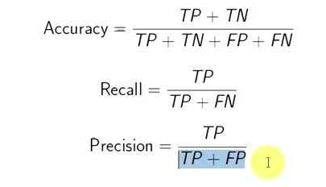
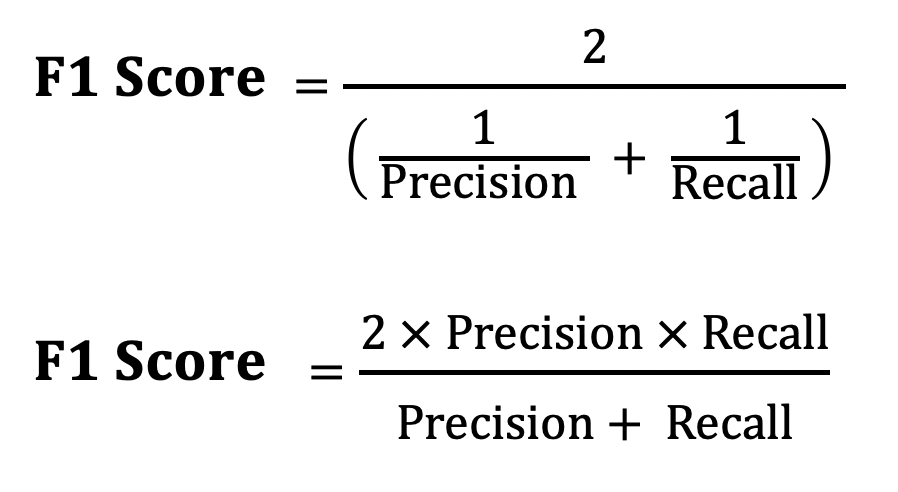
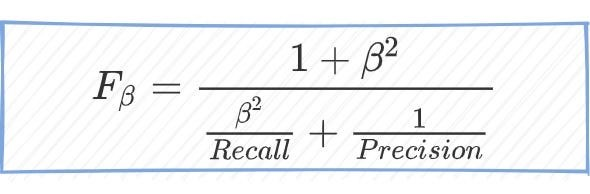
![Micro Averaged metrics given two different set of data :
TruePositivesl + TruePositives2
Micro — Precision =
TruePosirivesl + FalsePosirivesl + TruePosiTives2 + FalsePosiTives2
TruePositivesl + TruePositives2
- Recall =
Micro —F — Score = 2
Macro — F— Score = 2.
Mic ro
TruePositives1 + FalseNegativesl + TruePosirives2 + FalseNegatives2
Micro — Precision .Micro
- Recall
Micro — Precision + Micro —
Recall
Macro Averaged metrics with two datasets :
Pecisionl + Precision2
Macro — Precision =
2
Recalli + Reca112
Macro
- Recall =
2
— Precision . Macro
Macro — Precision + Macro
- Recall
- Recall](images/image32.png)
- If labels are more or less equally sized (have roughly the same number of instances), use any.
- If there are labels with more instances than others and if you want to bias your metric towards the most populated ones, use micr.
- If there are labels with more instances than others and if you want to bias your metric toward the least populated ones (or at least you don't want to bias toward the most populated ones), use macr.

False positive rate = 1 - Specificity
True positive rate = TP/P = recall = sensitivity
ROC ---- TPR vs FPR

Confusion Matrix

- Type 1 error is when your algorithm makes a positive prediction, but in fact, it’s negative. For example, your algorithm predicted a patient has cancer, but in fact, he doesn’t.
- Type 2 error is when your algorithm makes a negative prediction, but in fact, it’s positive. For example, your algorithm predicted a patient doesn’t have cancer, but in fact, they do.
Loss Functions
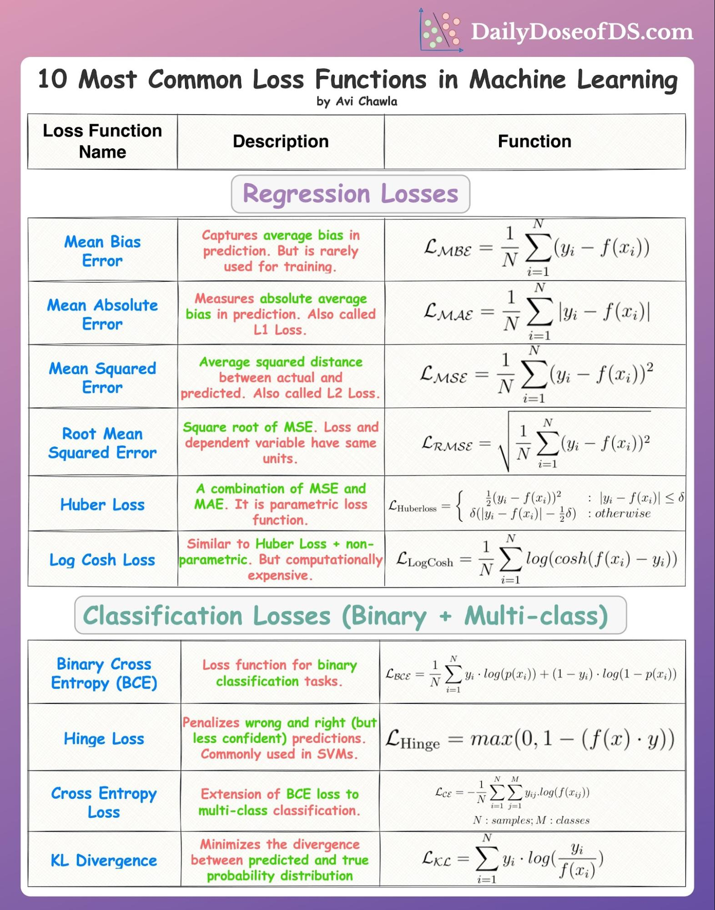
https://vinija.ai/concepts/loss/
Triplet Loss
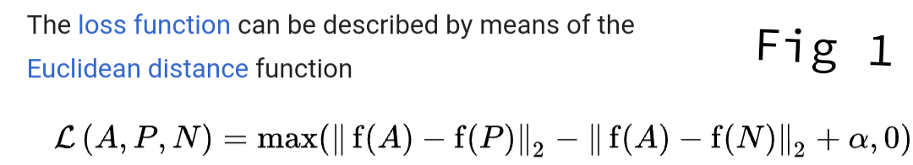
Why is “Naive” Bayes naive?
- Despite its practical applications, especially in text mining, Naive Bayes is considered “Naive” because it makes an assumption that is virtually impossible to see in real-life data: the conditional probability is calculated as the pure product of the individual probabilities of components. This implies the absolute independence of features — a condition probably never met in real life.
- computes the posterior probability of an event given what is known as prior knowledge.

Batch normalization
The technique to improve the performance and stability of neural networks by normalizing the inputs in every layer so that they have mean output activation of zero and standard deviation of one.
Covariance vs Correlation
Covariance is when two variables vary with each other, whereas Correlation is when the change in one variable results in the change in another variable.
The value of covariance between 2 variables is achieved by taking the summation of the product of the differences from the means of the variables as follows:
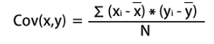
Covariance shows you how the two variables differ, whereas correlation shows you how the two variables are related.
The main result of a correlation is called the correlation coefficient.
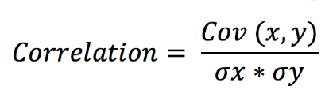
Why correlation is preferred over covariance?
because it remains unaffected by the change in location and scale, and can also be used to make a comparison between two pairs of variables.

Multi Layer Perceptron (NN)
MLP is fully connected feed-forward network. In particular CNN which is partially connected, RNN which has feedback loop are not MLPs. Multi-Layer Perceptron is a model of neural networks (NN). There are several other models including recurrent NN and radial basis networks.
Is a fully connected neural network equal to a feed-forward neural network?
Feed forward architecture implies absence of recurrent or feedback connections. The path is only forward facing, no backward feed connections between neurons are present. Thus the signal can only be fed forward hence the name feed-forward neural network (NN).
- A Feed-Forward Neural Network is a type of Neural Network architecture where the connections are "fed forward", i.e. do not form cycles (like in recurrent nets).
- The term "Feed forward" is also used when you input something at the input layer and it travels from input to hidden and from hidden to output layer. The values are "fed forward".
There are many types of feed forward NNs such as the:
- Fully connected multi layer neural networks such as the multi-layer perceptrons (MLP).
- Fully Convolutional neural networks.
- Convolutional neural networks + fully connected layers (normally just called convolutional neural networks)
There is another group called recurrent neural networks (RNN) with recurrent or feedback connections between neurons. Such networks are turing complete, in the sense that they can learn any function, spatial + temporal functions.
- Vanilla RNN which suffers mostly from vanishing/exploding gradient problem.
- Long short term memory (LSTM) networks.
- Gated recurrent unit (GRU) networks.
- Recurrent convolutional neural networks (RCNN).
Another varient are the so called memory augmented neural networks or memory networks in short. Which as the name implies are about a memory block hooked up to a neural network. They can somehow learn to reason.
- Neural turing machines (NTM)
- Differentiable neural computers (DNC).
Backpropagation vs Feed Forward
- Backpropagation is algorithm to train (adjust weight) of neural network. Input for backpropagation is output_vector, target_output_vector, output is adjusted_weight_vector.
- Feed-forward is algorithm to calculate output vector from input vector. Input for feed-forward is input_vector, output is output_vector.
- When you are training neural network, you need to use both algorithms.
- When you are using neural network (which have been trained), you are using only feed-forward.
- Basic type of neural network is multi-layer perceptron, which is Feed-forward backpropagation neural network.
Vanishing and Exploding Gradients
- it means the gradients are so small that the learning will be very slow.
- The reason for vanishing gradient is that during backpropagation, the gradient of early layers (layers near to the input layer) are obtained by multiplying the gradients of later layers (layers near to the output layer). So, for example if the gradients of later layers are less than one, their multiplication vanishes very fast.
- RNNs suffer from the problem of vanishing gradients, which hampers learning of long data sequences.
- LSTM was invented specifically to avoid the vanishing gradient problem.
- Model with exploding gradients produce NaN
Fix
- Weight regularization
- use LSTM
- use Gradient Clipping (limit gradients to a certain threshold for exploding gradients)
RNN vs LSTM vs GRU
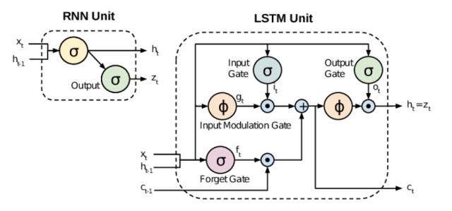

Recurrent Neural Networks (RNNs)
Pros:
- Simple Architecture: RNNs have a straightforward architecture, making them easy to implement and understand.
- Efficient for Short Sequences: They work well for tasks involving short sequences where long-term dependencies are not critical.
Cons:
- Vanishing Gradient Problem: RNNs suffer from the vanishing gradient problem, making it difficult to learn long-term dependencies.
- Limited Memory: They struggle to retain information from far in the past, limiting their effectiveness on longer sequences.
- Training Instability: Training can be unstable and slow due to gradient issues.
Long Short-Term Memory Networks (LSTMs)
- Decides what portion of the previous cell state to forget.
- Decides what new information to store in the cell state.
- Decides what part of the cell state to output.
Pros:
- Long-Term Dependencies: LSTMs are designed to capture long-term dependencies in the data, thanks to their memory cell and gating mechanisms.
- Mitigate Vanishing Gradient: The architecture of LSTMs helps to mitigate the vanishing gradient problem, allowing for more stable and effective training on longer sequences.
- Versatile: They perform well on a variety of sequential tasks, including time series prediction, text generation, and speech recognition.
Cons:
- Complex Architecture: LSTMs have a more complex architecture compared to simple RNNs, making them harder to implement and understand.
- Computationally Intensive: They require more computational resources and memory due to the additional gates and parameters.
- Longer Training Times: The complexity of the architecture can lead to longer training times.
Gated Recurrent Units (GRUs)
- Controls how much of the previous hidden state to forget.
- Decides how much of the previous hidden state and the current new candidate state to combine to update the hidden state.
Pros:
- Simpler Architecture: GRUs have a simpler architecture compared to LSTMs, with fewer gates (reset and update gates) and parameters, making them easier to implement and faster to train.
- Efficient Training: They often train faster and require less computational power and memory compared to LSTMs.
- Handle Long-Term Dependencies: Like LSTMs, GRUs are designed to handle long-term dependencies and can mitigate the vanishing gradient problem.
- Performance: GRUs often perform comparably to LSTMs on a variety of tasks, sometimes even outperforming them, especially when computational efficiency is a concern.
Cons:
- Less Interpretability: The simpler gating mechanism may not capture all aspects of long-term dependencies as effectively as LSTMs in certain cases.
- Task Specificity: While GRUs work well on many tasks, there are cases where the additional complexity of LSTMs provides a performance advantage.
Summary
- RNNs: Best for short sequences and simpler tasks due to their simplicity, but they struggle with long-term dependencies and suffer from the vanishing gradient problem.
- LSTMs: Excellent for tasks requiring long-term memory and handling long sequences, but they are computationally intensive and have a complex architecture.
- GRUs: Offer a balance between RNNs and LSTMs, with a simpler architecture and faster training times while still handling long-term dependencies effectively. They are often preferred when computational efficiency is important.
Can we use RNN for image processing
Pixel RNN

Normlization
Normalization is a scaling technique in which values are shifted and rescaled so that they end up ranging between 0 and 1. It is also known as Min-Max scaling.
Standardization
Standardization is another scaling technique where the values are centered around the mean with a unit standard deviation. This means that the mean of the attribute becomes zero and the resultant distribution has a unit standard deviation.
Why Feature Scaling
- It is required only when features have different ranges.
- Having features on a similar scale can help the gradient descent converge more quickly towards the minima.
- In distance based algorithm, the higher values overpower the lower valued features
- The model weights shoot up and will not learn from raw data.
- Computational benefits.
Normalize or Standardize?
- Normalization is good to use when you know that the distribution of your data does not follow a Gaussian distribution. This can be useful in algorithms that do not assume any distribution of the data like K-Nearest Neighbors and Neural Networks.
- Normalization is good to use when you know that the distribution of your data does not follow a Gaussian distribution. This can be useful in algorithms that do not assume any distribution of the data like K-Nearest Neighbors and Neural Networks.
- Standardization, on the other hand, can be helpful in cases where the data follows a Gaussian distribution. However, this does not have to be necessarily true. Also, unlike normalization, standardization does not have a bounding range. So, even if you have outliers in your data, they will not be affected by standardization.

https://www.analyticsvidhya.com/blog/2020/04/feature-scaling-machine-learning-normalization-standardization/
Batch Normalisation
- A typical neural network is trained using a collected set of input data called batch. Similarly, the normalizing process in batch normalization takes place in batches, not as a single input.
- h is the input to the hidden layer, so we apply normalisation at a particular layer before passing through the activation.
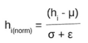
Restricted Boltzmann machine
RBMs are a variant of Boltzmann machines, with the restriction that their neurons must form a bipartite graph: a pair of nodes from each of the two groups of units (commonly referred to as the "visible" and "hidden" units respectively) may have a symmetric connection between them; and there are no connections between nodes within a group. By contrast, "unrestricted" Boltzmann machines may have connections between hidden units. This restriction allows for more efficient training algorithms than are available for the general class of Boltzmann machines, in particular the gradient-based contrastive divergence algorithm.
What’s the difference between KNN and K-means?
KNN is a supervised model used for classification
K-Means is an unsupervised model used for clustering.
Cross Validation
K-Fold
- Split into k folds and train k-1 models leaving one fold as test set
- During inference, uses all the k-1 models
Leave one out
- k = n (data points)
- only one test point as test set
- suitable for small datasets
Pruning a decision tree
Pruning reduces the size of decision trees by removing parts of the tree that do not provide power to classify instances.
Overfitting in Decision Trees
- Decision trees are prone to overfitting, especially when a tree is particularly deep.
- They can form a branch for each data point and wont generalise
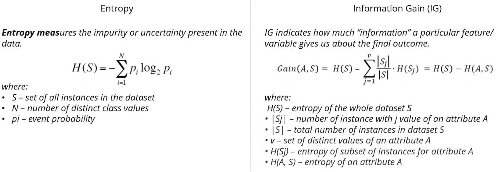

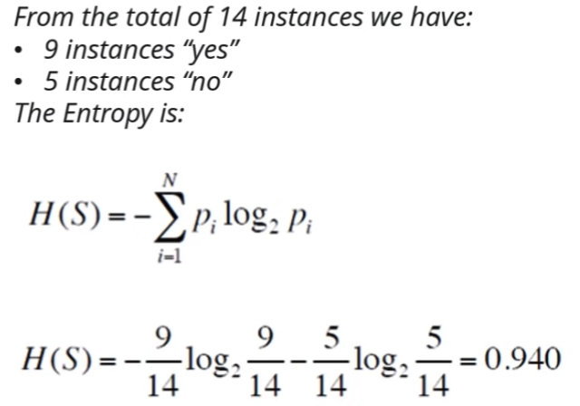
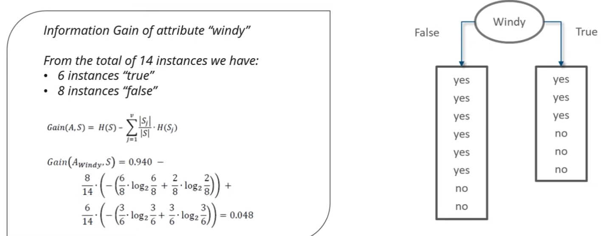

Cross entropy
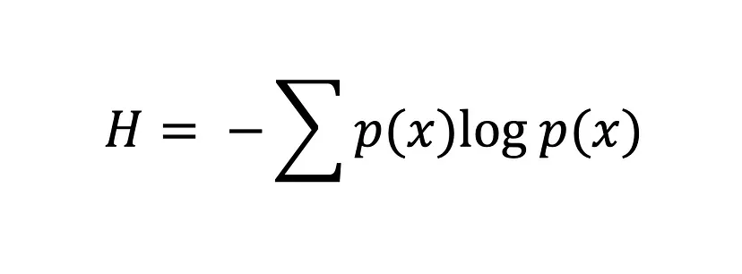
Logistic regression uses
Log Loss=−(ylog(y^)+(1−y)log(1−y^))
Curse of Dimensionality
- If we have more features than observations than we run the risk of massively overfitting our model — this would generally result in terrible out of sample performance.
- PCA is used to reduce the dimensitions
- A typical rule of thumb is that there should be at least 5 training examples for each dimension in the representation.
- This phenomenon states that with a fixed number of training samples, the average (expected) predictive power of a classifier or regressor first increases as the number of dimensions or features used is increased but beyond a certain dimensionality it starts deteriorating instead of improving steadily.
Eigenvalues and Eigenvector
In linear algebra, an eigenvector of a linear transformation is a nonzero vector that changes at most by a scalar factor when that linear transformation is applied to it. The corresponding eigenvalue, often denoted by is the factor by which the eigenvector is scaled.
AX=λX
(𝐴−𝜆𝐼)𝑋=0
λ is called an eigenvalue
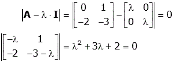
eigen values: λ1=-1, λ2=-2
eigen vector for λ1
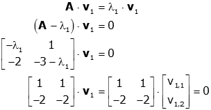
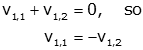
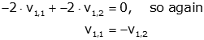
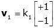
eigen vector for λ2
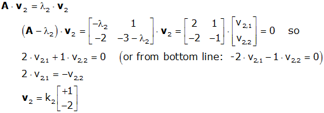
PCA vs SVD
- Connection: PCA can be viewed as a specific application of SVD where the data matrix is centered (mean-subtracted) before applying SVD on its covariance matrix.
- Dimensionality Reduction: While both techniques can be used for dimensionality reduction, PCA explicitly focuses on identifying axes that capture maximum variance, whereas SVD provides a decomposition that can be used for various purposes beyond dimensionality reduction.
- Data Handling: PCA is typically used on data matrices, whereas SVD is applied to any matrix, including rectangular and sparse matrices.
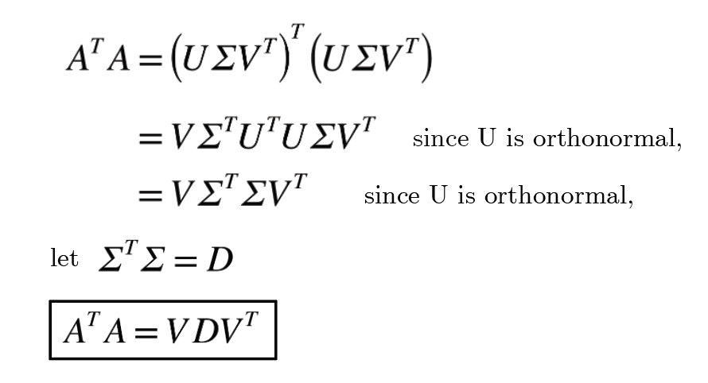
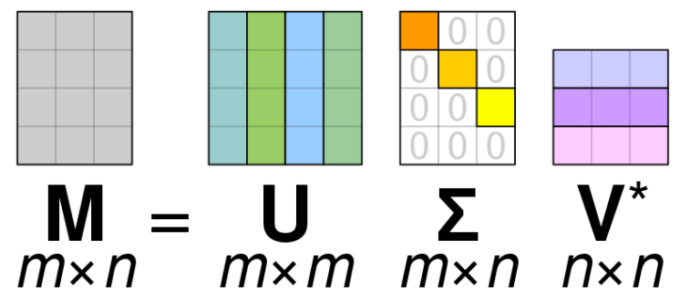
Model Calibration
Model calibration can be defined as finding a unique set of model parameters that provide a good description of the system behaviour, and can be achieved by confronting model predictions with actual measurements performed on the system.
Exploration vs Exploitation strategies
The exploration-exploitation trade-off is a well-known problem that occurs in scenarios where a learning system has to repeatedly make a choice with uncertain pay-offs. In essence, the dilemma for a decision-making system that only has incomplete knowledge of the world is whether to repeat decisions that have worked well so far (exploit) or to make novel decisions, hoping to gain even greater rewards (explore).
ϵ-greedy
- ϵ-greedy lets you decide what fraction of your decisions you want to spend exploring (ϵ) and what fraction you want to spend exploiting (1-ϵ) the best option so far.
Upper Confidence Bound (UCB)
- At every step, we don’t just pick the option with the highest estimated mean reward μ, as we would with the greedy approach, but we instead go for the option with the highest μ plus one standard deviation σ.
- We call μ + βσ the upper confidence bound, where beta is a trade-off parameter, used to steer towards more or less exploration. As β tends to zero, we get closer to pure exploitation of the option that provided the highest mean reward thus far. High β values, on the other hand, favor exploring until we have little uncertainty left.
Thompson Sampling
- At every time-step, we draw one sample from each distribution. We then rank the options based on the reward-value of these samples, just as we ranked the distributions based on mean plus β times the standard deviation before. Finally, we pick the highest-ranked option.
Bagging vs Boosting
Bagging - Combines the predictions from multiple machine learning algorithms together to make more accurate predictions than any individual model. Used to reduce the variance for those algorithm that have high variance.
Boosting - an ensemble meta-algorithm for primarily reducing bias, and also variance in supervised learning, and a family of machine learning algorithms that convert weak learners to strong ones. Takes several weak models, aggregating the predictions to select the best prediction.
- Very roughly, we can say that bagging will mainly focus at getting an ensemble model with less variance than its components
- boosting and stacking will mainly try to produce strong models less biased than their components (even if variance can also be reduced).
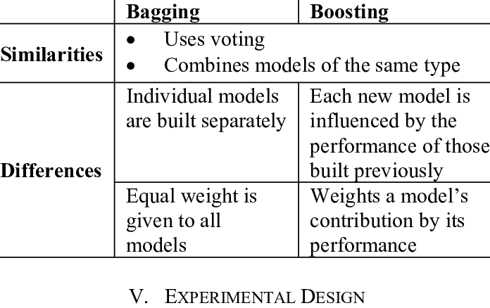

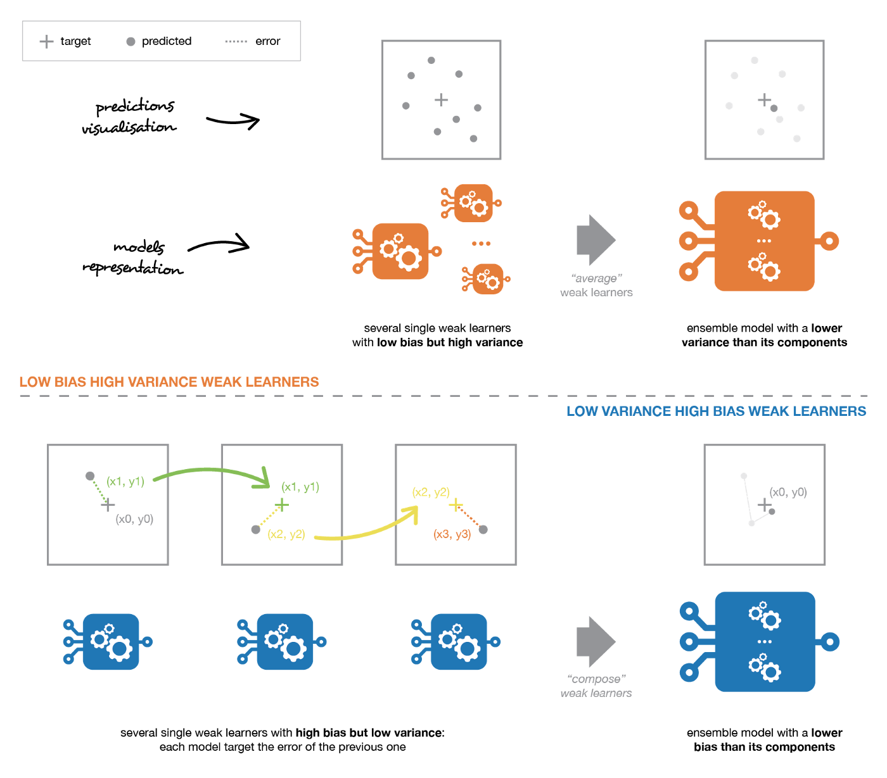
Decision Tree vs Random Forest
- When using a decision tree model on a given training dataset the accuracy keeps improving with more and more splits. You can easily overfit the data and doesn't know when you have crossed the line unless you are using cross validation (on training data set). The advantage of a simple decision tree is model is easy to interpret, you know what variable and what value of that variable is used to split the data and predict outcome.
- A random forest is like a black box and works as mentioned in above answer. It's a forest you can build and control. You can specify the number of trees you want in your forest(n_estimators) and also you can specify max num of features to be used in each tree. But you cannot control the randomness, you cannot control which feature is part of which tree in the forest, you cannot control which data point is part of which tree. Accuracy keeps increasing as you increase the number of trees, but becomes constant at certain point. Unlike decision tree, it won't create highly biased model and reduces the variance.
When to use a decision tree:
- When you want your model to be simple and explainable
- When you want non parametric model
- When you don't want to worry about feature selection or regularization or worry about multi-collinearity.
- You can overfit the tree and build a model if you are sure of validation or test data set is going to be subset of training data set or almost overlapping instead of unexpected.
When to use random forest :
- When you don't bother much about interpreting the model but want better accuracy.
- Random forest will reduce variance part of error rather than bias part, so on a given training data set decision tree may be more accurate than a random forest. But on an unexpected validation data set, Random forest always wins in terms of accuracy.
Non Parametric Model
A nonparametric model is one which cannot be parametrized by a fixed number of parameters
- k-Nearest Neighbors
- Decision Trees like CART and C4.5
- Support Vector Machines (when without parameters)
RNN vs LSTM vs GRU


- GRU is related to LSTM as both are utilizing different way if gating information to prevent vanishing gradient problem.
- The GRU controls the flow of information like the LSTM unit, but without having to use a memory unit. It just exposes the full hidden content without any control.
- GRU performance is on par with LSTM, but computationally more efficient (less complex structure as pointed out).
- GRUs train faster and perform better than LSTMs on less training data if you are doing language modeling (not sure about other tasks).
- GRUs are simpler and thus easier to modify, for example adding new gates in case of additional input to the network. It's just less code in general.
- LSTMs should in theory remember longer sequences than GRUs and outperform them in tasks requiring modeling long-distance relations.
Bayesian Optimization
- There are 4 types of hyperparameter optimization: Manual Search, Random Search, Grid Search, and Bayesian Optimization
- In Bayesian, The performance of your past hyperparameter affects the future decision.
- In comparison, Random Search and Grid Search do not take into account past performance when determining new hyperparameters to evaluate. Thus, Bayesian Optimization is a much more efficient method.
- Say we want to find a set of hyperparameters that will minimize RMSE. Here, the function to compute RMSE is called objective function. If we were to know the probability distribution of our objective function, (in simple words, if we were to know the shape of the objective function), then we can simply compute the gradient descent and find the global minimum.
- Bayesian Optimization builds a probability model of the objective function and uses it to select hyperparameter to evaluate in the true objective function.
- we need to build a surrogate model (also called response surface model) to approximate the true objective function.
- A surrogate model by definition is “the probability representation of the objective function”, which is essentially a model trained on the (hyperparameter, true objective function score) pairs. In math, it is p(objective function score | hyperparameter).
SMBO stands for Sequential Model-Based Optimization, which is another name of Bayesian Optimization. It is “sequential” because the hyperparameters are added to update the surrogate model one by one; it is “model-based” because it approximates the true objective function with a surrogate model that is cheaper to evaluate.
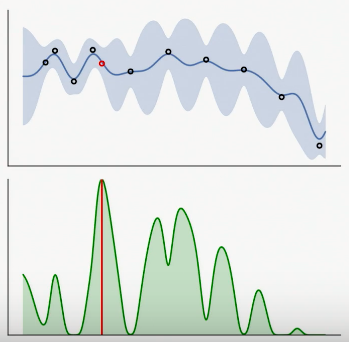

Why Gaussian radial basis function maps the examples into an infinite-dimensional space?
- If you have m distinct training points then the gaussian radial basis kernel makes the SVM operate in an m dimensional space. We say that the radial basis kernel maps to a space of infinite dimension because you can make m as large as you want and the space it operates in keeps growing without bound.
- However, other kernels, like the polynomial kernel do not have this property of the dimensionality scaling with the number of training samples. For example, if you have 1000 2D training samples and you use a polynomial kernel of <x,y>^2 then the SVM will operate in a 3 dimensional space, not a 1000 dimensional space.
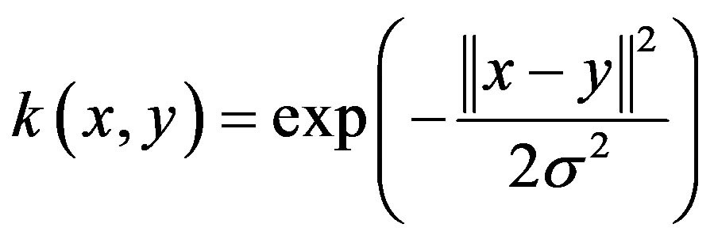
Types of Variables
Dependent and Independent Variables
- An independent variable, sometimes called an experimental or predictor variable, is a variable that is being manipulated in an experiment in order to observe the effect on a dependent variable, sometimes called an outcome variable.
- The dependent variable is simply that, a variable that is dependent on an independent variable(s).
Categorical
Nominal variables | that have two or more categories, but which do not have an intrinsic order. |
Dichotomous variables | nominal variables which have only two categories or levels. |
Ordinal variables | that have two or more categories just like nominal variables only the categories can also be ordered or ranked. |
Continuous
Interval variables | Variables for which their central characteristic is that they can be measured along a continuum and they have a numerical value. |
Ratio variables | Are interval variables, but with the added condition that 0 (zero) of the measurement indicates that there is none of that variable. |
Train an Ordinal Regression with any Classifier
- binary target is 1 if ratings > 1, so the classifier will predict Pr(Target > 1)
- binary target is 1 if ratings > 2, so the classifier will predict Pr(Target > 2)
- binary target is 1 if ratings > 4, so the classifier will predict Pr(Target > 3)
- binary target is 1 if ratings > 4, so the classifier will predict Pr(Target > 4)

Pr(y=1) = 1-Pr(Target > 1)
Pr(y=2) = Pr(Target>1)-P(Target > 2)
Pr(y=3) = Pr(Target>2)-P(Target > 3)
Pr(y=4) = Pr(Target>3)-P(Target > 4)
Pr(y=5) = Pr(Target>4)

Cross Entropy
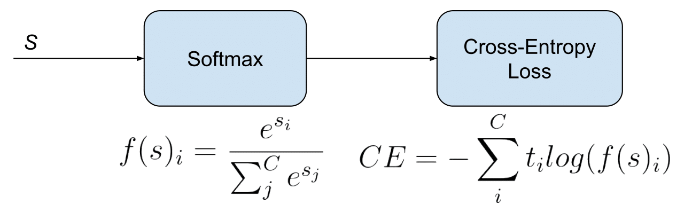
Adam vs AdaGrad vs RMSProp
https://ruder.io/optimizing-gradient-descent/
Activation Functions

https://towardsdatascience.com/activation-functions-neural-networks-1cbd9f8d91d6
Batch norm
- The Batch Normalization Layer is actually inserted right after a Conv Layer/Fully Connected Layer, but before feeding into ReLu (or any other kinds of) activation.
- Dropout is applied after activation layer.
- CONV/FC -> BatchNorm -> ReLu(or other activation) -> Dropout -> CONV/FC
- Faster Training
- Improves Regularization
- Improves Accuracy
Naive Bayes
Multinomial Naive Bayes calculates likelihood to be count of an word/token (random variable) and Gaussian Naive Bayes calculates likelihood to be following:
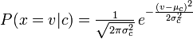
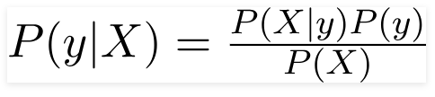
Dropout
Dropout is a regularization method that approximates training a large number of neural networks with different architectures in parallel.
CBOW vs Skipgram
Word2Vec has two types: CBOW and SkipGram
- As we know, CBOW is learning to predict the word by the context. Or maximize the probability of the target word by looking at the context. And this happens to be a problem for rare words. For example, given the context yesterday was a really [...] day CBOW model will tell you that most probably the word is beautiful or nice. Words like delightful will get much less attention of the model, because it is designed to predict the most probable word. This word will be smoothed over a lot of examples with more frequent words.
- On the other hand, the skip-gram model is designed to predict the context. Given the word delightful it must understand it and tell us that there is a huge probability that the context is yesterday was really [...] day, or some other relevant context. With skip-gram the word delightful will not try to compete with the word beautiful but instead, delightful+context pairs will be treated as new observations.
Skip-gram: works well with small amount of the training data, represents well even rare words or phrases.
CBOW: several times faster to train than the skip-gram, slightly better accuracy for the frequent words
Glove vs Fasttext
- Glove treats each word in corpus like an atomic entity and generates a vector for each word. In this sense Glove is very much like word2vec- both treat words as the smallest unit to train on.
- Fasttext which is essentially an extension of word2vec model, treats each word as composed of character ngrams. So the vector for a word is made of the sum of this character n grams. This difference enables fasttext to
- In word2vec, Skipgram models try to capture co-occurrence one window at a time
- In Glove it tries to capture the counts of overall statistics how often it appears.
SVD
M=UΣVᵗ, where:
M-is original matrix we want to decompose
U-is left singular matrix (columns are left singular vectors). U columns contain eigenvectors of matrix MMᵗ
Σ-is a diagonal matrix containing singular (eigen) values
V-is right singular matrix (columns are right singular vectors). V columns contain eigenvectors of matrix MᵗM

SVD is more general than PCA. From the previous picture we see that SVD can handle matrices with different number of columns and rows. SVD is similar to PCA. PCA formula is M=𝑄𝚲𝑄ᵗ, which decomposes matrix into orthogonal matrix 𝑄 and diagonal matrix 𝚲. Simply this could be interpreted as:
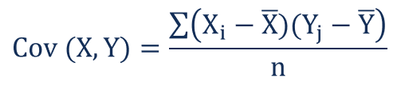
Batch norm
Optimisers
Activation
NB
Dropout
Bagging boosting
Overfitting and Underfitting
SVM
Bias and Variance
Supervised learning:
Topics: linear and logistic regression, Random Forests, Gradient Boosted trees, k-nearest neighbor methods, Naïve Bayes, kernel methods, Stochastic Gradient Descent (SGD), Bayesian linear regression, Gaussian Processes, concepts of overfitting and under fitting, regularization, and evaluation metrics for classification and regression problems.
Deep neural networks:
Topics: feedforward neural networks (NNs), Convolutional Neural Networks (CNNs), backpropagation, Recurrent Neural Networks (RNNs), and Long Short Term Memory (LSTM) networks.
Unsupervised learning:
Topics: clustering algorithms, Expectation Maximization (EM), Gaussian Mixture Models, and evaluation metrics for clustering problems.
Probabilistic Graphical models:
Topics: topic models such as Latent Dirichlet Allocation (LDA) and inference methods such as Belief Propagation, Gibbs Sampling, and Variational Inference.
Dimensionality reduction:
Topics: Principal Component Analysis (PCA), Singular Value Decomposition (SVD), Spectral Clustering and Matrix Factorization.
Sequential models:
Topics: Conditional Random Fields (CRFs), Hidden Markov Models (HMMs), and Natural Language processing applications such as Named Entity Recognition (NER) and Parts of Speech (POS) tagging.
Reinforcement learning:
Topics: explore-exploit techniques, multi-armed bandits (epsilon greedy, UCB, Thompson Sampling), Q-learning, and Deep Q-Networks (DQNs).
Expect to be asked about data-driven modeling, train/test protocols, error analysis, and statistical significance
Matrix factorization methods
SVD and eigen decomposition
XGboost and GBM
Propensity Model and how beta estimates are calculated by MLE?
Time Series Model and meaning and calculation of ACF and PACF?
how to calculate sample size?
Conjugate priors in Gibbs sampling
Collapsed Gibbs sampling
Categorical vs ordinal
Distributions for categorical and real
Is Deep learning better than ML for normal text classification tasks.
https://vinija.ai/concepts/
https://www.geeksforgeeks.org/find-number-of-islands/
https://www.geeksforgeeks.org/longest-increasing-subsequence-dp-3/
https://www.geeksforgeeks.org/sort-array-wave-form-2/
https://www.geeksforgeeks.org/tree-traversals-inorder-preorder-and-postorder/
https://www.geeksforgeeks.org/longest-common-subsequence-dp-4/
https://www.geeksforgeeks.org/partition-problem-dp-18/
https://www.geeksforgeeks.org/largest-sum-contiguous-subarray/
https://www.geeksforgeeks.org/find-the-first-repeated-character-in-a-string/
https://jalammar.github.io/illustrated-transformer/
https://medium.com/@14prakash/back-propagation-is-very-simple-who-made-it-complicated-97b794c97e5c
https://www.simplilearn.com/tutorials/deep-learning-tutorial/deep-learning-interview-questions
https://www.javatpoint.com/deep-learning-interview-questions
https://www.springboard.com/blog/machine-learning-interview-questions/
https://www.ccs.neu.edu/home/vip/teach/MLcourse/6_SVM_kernels/lecture_notes/svm/svm.pdf
https://www.knowledgehut.com/blog/data-science/linear-discriminant-analysis-for-machine-learning
https://towardsdatascience.com/what-is-two-stream-self-attention-in-xlnet-ebfe013a0cf3
https://www.quora.com/What-are-the-disadvantages-of-a-recurrent-neural-network
https://datascience.stackexchange.com/questions/27392/so-whats-the-catch-with-lstm
https://towardsdatascience.com/the-fall-of-rnn-lstm-2d1594c74ce0
http://jalammar.github.io/illustrated-bert/
http://jalammar.github.io/illustrated-transformer/
https://jonathan-hui.medium.com/nlp-bert-transformer-7f0ac397f524
https://stattrek.com/hypothesis-test/hypothesis-testing.aspx
Z1 = W1X + b1 # shape of Z1 (noOfHiddenNeurons,m)
A1 = sigmoid(Z1) # shape of A1 (noOfHiddenNeurons,m)
Z2 = W2A1 + b2 # shape of Z2 is (1,m)
A2 = sigmoid(Z2) # shape of A2 is (1,m)
A = 1 / (1 + np.exp(-z)) # Where z is the input matrix
The lognormal distribution differs from the normal distribution in several ways. A major difference is in its shape: the normal distribution is symmetrical, whereas the lognormal distribution is not. Because the values in a lognormal distribution are positive, they create a right-skewed curve.

valence shifters sentiment classification
We examine three types of valence shifters: negations, intensifiers, and diminishers.
https://aman.ai/
https://vinija.ai/